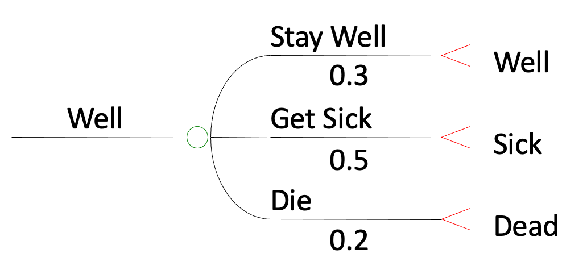
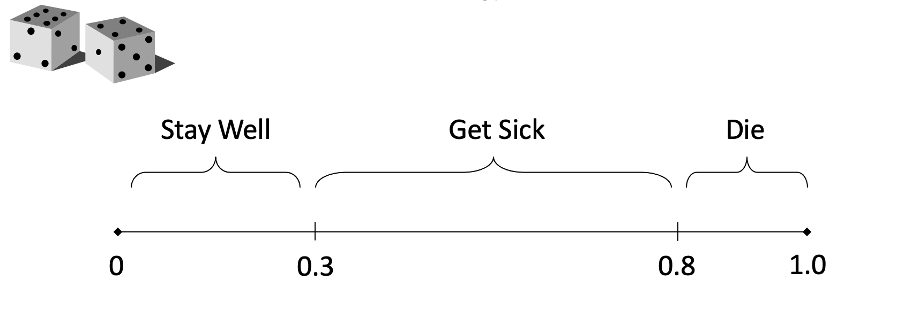
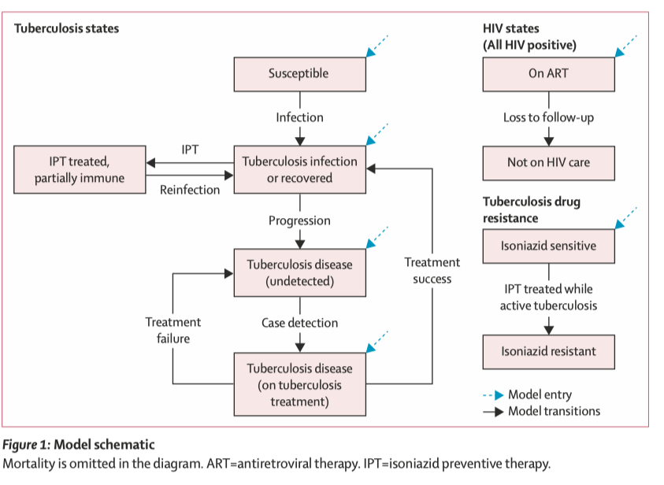
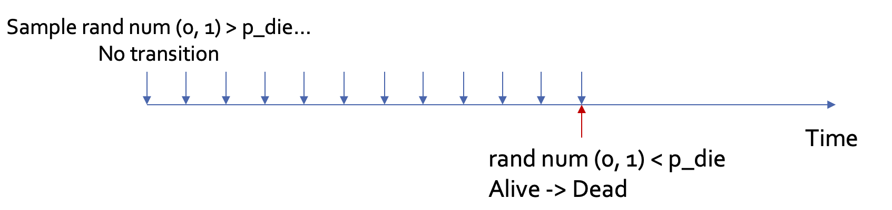
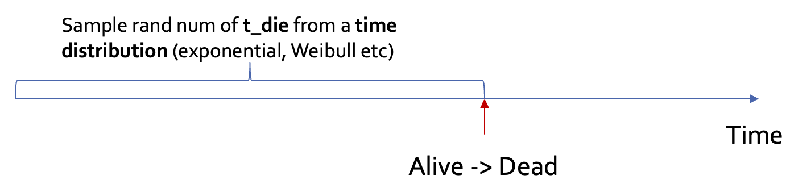
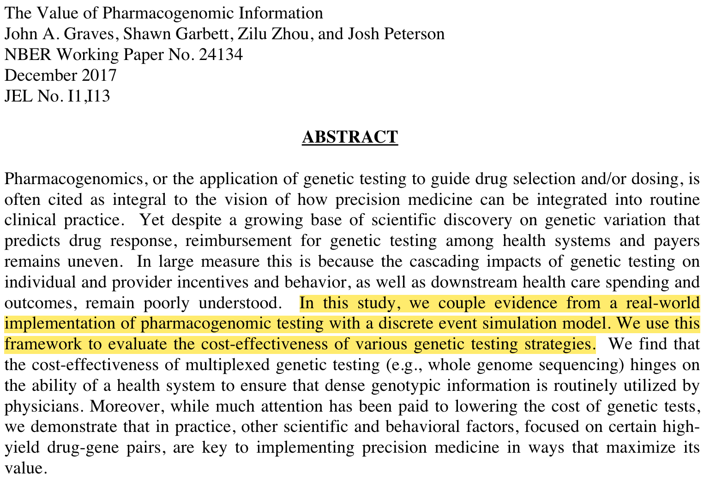
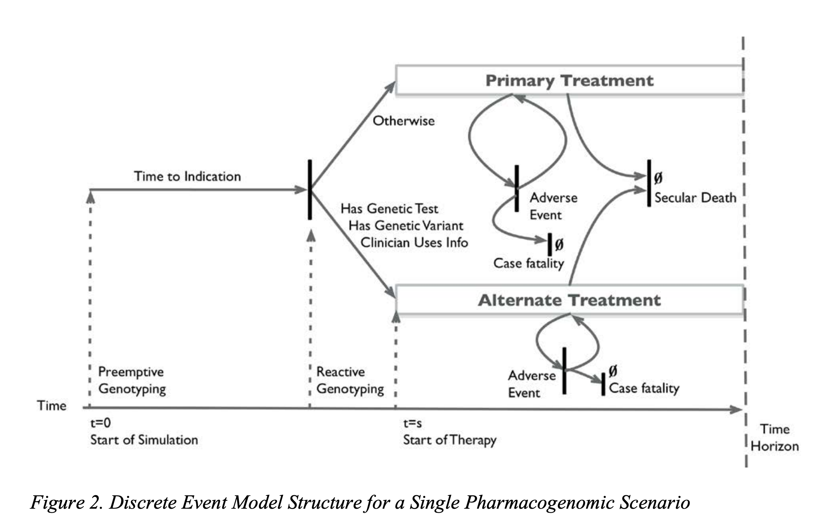
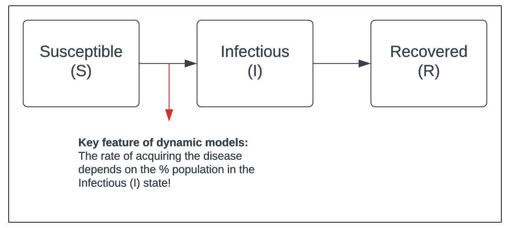
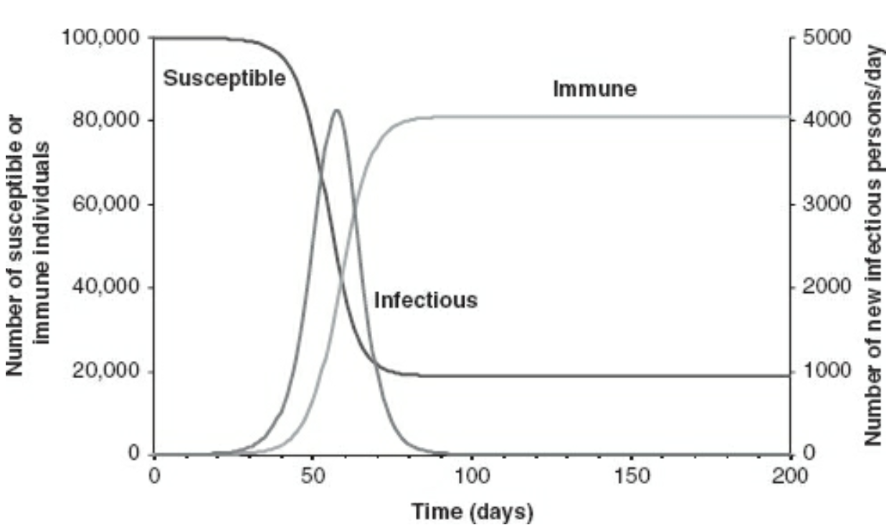
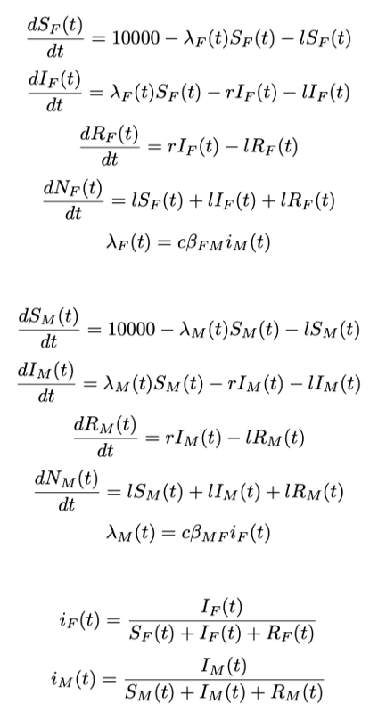

Advanced Modeling Techniques
Learning Objectives and Outline
Learning Objectives
Be able to understand the basic concepts and identify the strengths and limitations of alternative modeling techniques, including:
Microsimulation (Monte Carlo simulation)
Discrete event simulation
Infectious disease (dynamic) models
Outline
Microsimulation (Monte Carlo simulation)
Discrete event simulation
Infectious disease (dynamic) models
Comparison of model types
Microsimulation
Microsimulation models
Markov simulation
- Focuses on the average: essentially assuming infinite cohort of individuals transitions through the model simultaneously to obtain the expected values
Microsimulation
Synonyms = stochastic microsimulation, individual-based model, 1st order Monte Carlo simulation
Hypothetical individuals transition through the model, one at a time
Steps
Determine initial state, using the distribution of starting probabilities
- e.g. probability of starting in sick/healthy
Simulate individual trajectory through health states, using random numbers to determine actual transitions (yes/no) from transition probabilities
Record # of cycles in each state
Repeat steps 1-3 many times (N)
Steps
Calculate mean # of cycles from sample of N
- Can weight states by utility, cost, discount factor (same as with Markov models)
Random numbers


Markov cohort vs Microsimulation
[Shift to Powerpoint…]
Example
Context: Economic evaluation of TB prevention among people living with HIV in Tanzania
Example
TB accounts for >25% deaths among people living with HIV
Isoniazid preventive therapy (IPT) can prevent TB among people receiving antiretroviral therapy (ART)
HIV programmes are now initiating patients on ART with higher average CD4 cell counts and lower tuberculosis risks under test-and-treat guidelines
We aimed to investigate how this change has affected the health impact and cost-effectiveness of IPT
Example
Zhu et al, The Lancet Global Health, 2022
Example
Why choose a microsimulation model?
Individual-level characteristics on age, sex, CD4 cell count
Tracking individual trajectory is crucial for this question
CD4 cell counts change with HIV treatment
Event rates (mortality and TB progression rates) are dependent on CD4 cell counts
A markov cohort model wouldn’t be able to capture these complex mechanisms!
Discrete event simulation
Microsimulation vs DES
Miscrosimulation

Discrete event simulation

DES
Similar to microsimulation, DES simulates one individual at a time \rightarrow Subject to stochasticity
Different from microsimulation (where time is discretized), DES models time continuously
Pros:
Faster: Skips unnecessary cycles where no events happen
More natural to implement when data are presented as time-to-event distributions (wait time, length of stay in hospital, onset-to-treatment time for acute conditions)
Cons:
Less intuitive: “time to death is sampled from a Weibull distribution of shape = 2.72, scale = 58.5” (DES) vs. “the probability of death in year 1 is 0.038” (Microsim)
Those time steps may be useful even if there’s no event! (In the HIV/TB example, CD4 cell count is updated every cycle to recalculate TB and death risks)
Example
Example
Graves et al, 2017
Infectious disease (dynamic) models
Why dynamic models?
So far all model types we discussed assume that individuals in the model cohort experience events independently
- Appropriate assumption for most chronic disease models
But what about infectious diseases (e.g. COVID) where individuals interact with each other?
- E.g. the risk of acquiring COVID for a healthy (susceptible) individual depends on how many individuals current have COVID in the population
The SIR model
The most classic model in infectious disease epidemiology. Appropriate for many common infectious diseases (e.g., the flu).
The SIR model
Source: Vynnycky, Emilia; White, Richard. An Introduction to Infectious Disease Modelling.
Variants of the SIR model
From the simple SIR process, we can add more stuctures to reflect the process of a particular disease, for example:
Age- or sex- mixing: appropriate for sexually transmitted diseases
A stage where individuals are infected but not infectious: appropriate for diseases with a latent stage, e.g., TB, COVID-19
Dynamic models are often expressed/solved as difference/differential equations
Example:

They can be solved by hand or using softwares (e.g. deSolve package in R)
How to choose the right model?
Comparison of model types
| Model Type | Strengths | Limitations |
|---|---|---|
| Decision tree | Transparent Straightforward calculations |
Difficult to capture progression over time or repeated events |
| Markov cohort | Able to capture repeated events over time Fast run speed |
Difficult to capture individual heterogeneity or track history of events Hard to handle complicated disease process (subject to state explosion) |
Comparison of model types
| Model Type | Strengths | Limitations |
|---|---|---|
| Decision tree | Transparent Straightforward calculations |
Difficult to capture progression over time or repeated events |
| Markov cohort | Able to capture repeated events over time Fast run speed |
Difficult to capture individual heterogeneity or track history of events Hard to handle complicated disease process (subject to state explosion) |
| Microsimulation | Easy to track history Very powerful and flexible |
Requires a large number of runs to converge Slowest run speed |
Comparison of model types
| Model Type | Strengths | Limitations |
|---|---|---|
| Decision tree | Transparent Straightforward calculations |
Difficult to capture progression over time or repeated events |
| Markov cohort | Able to capture repeated events over time Fast run speed |
Difficult to capture individual heterogeneity or track history of events Hard to handle complicated disease process (subject to state explosion) |
| Microsimulation | Easy to track history Very powerful and flexible |
Requires a large number of runs to converge Slowest run speed |
| Discrete event simulation | Easy to track history Faster than microsimulation |
Requires a large number of runs to converge Time-to-event distributions are less intuitive and harder to obtain than event rates/probabilities |
Comparison of model types
| Model Type | Strengths | Limitations |
|---|---|---|
| Decision tree | Transparent Straightforward calculations |
Difficult to capture progression over time or repeated events |
| Markov cohort | Able to capture repeated events over time Fast run speed |
Difficult to capture individual heterogeneity or track history of events Hard to handle complicated disease process (subject to state explosion) |
| Microsimulation | Easy to track history Very powerful and flexible |
Requires a large number of runs to converge Slowest run speed |
| Discrete event simulation | Easy to track history Faster than microsimulation |
Requires a large number of runs to converge Time-to-event distributions are less intuitive and harder to obtain than event rates/probabilities |
| Dynamic | Able to capture transmission of disease | More data requirements (e.g. contact patterns in populaton) More black-box |
How to choose the right model?
Factors to consider:
Policy question/interventions
Data availability
Natural history of disease
Computational resources available